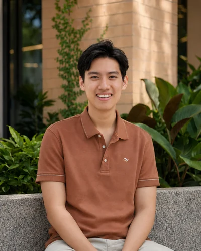

STATION 01
AI ALLEY
AI ALLEY
AI-Assisted Research Synthesis
A team research system for source-linked synthesis of historical scientific reports.
MY ROLELead-agent orchestration & evaluation
PythonRAGMulti-agent workflowEmbeddings
AN INTERACTIVE PORTFOLIO BY VIGO DANG
Six systems. One neon night.
Bring the market online. Discover the engineering behind it.
Explore the night market with JavaScript, or take the direct route.
View all projects directly ↓Help Vigo restore six systems.
Every connection tells a real engineering story.
Sound begins only when enabled. Critical cues are also shown visually.
ALL SIX SYSTEMS RESTORED
Thanks for taking the scenic route through my work.
THE DIRECT ROUTE
Six real projects, from research retrieval to parallel computing. Open a brief for my contribution, evidence and engineering decisions.
A team research system for source-linked synthesis of historical scientific reports.
MY ROLELead-agent orchestration & evaluation
An authenticated web app that uploads a CSV, queues its analysis and returns an interactive quality report.
MY ROLECSV workflow & application integration
A desktop app connecting data preparation, model training, predictions, history and reporting around a 30,000-record dataset.
MY ROLEApplication & ML workflow
A multimodal AI assistant with streaming conversations, read-only tools, user-scoped retrieval and queued media processing.
MY ROLEAgent & backend engineering
A supplied C++ protein-signature program reworked for deterministic parallel execution.
MY ROLEPerformance engineering & benchmarking
A TensorFlow/Keras segmentation workflow using RGB imagery and DSM elevation, with tiled inference.
IMPLEMENTATION FOCUSDeep Learning implementation study

THE PERSON BEHIND THE PLAYER
Brisbane, Australia
I’m a QUT Data Science student building data applications, AWS workflows and retrieval-based AI. I’m interested in the whole system: the data, the software, and the evidence that it works.
Software & dataPython · SQL · C++17 · JavaScript/Node.js
Cloud systemsAWS · APIs · queues · Docker
Machine learningscikit-learn · XGBoost · LightGBM
Deep Learning & AIPyTorch · TensorFlow · embeddings · RAG
CONTACT TERMINAL / ALWAYS OPEN
I’m seeking internship and early-career roles in data, analytics, software and cloud engineering.